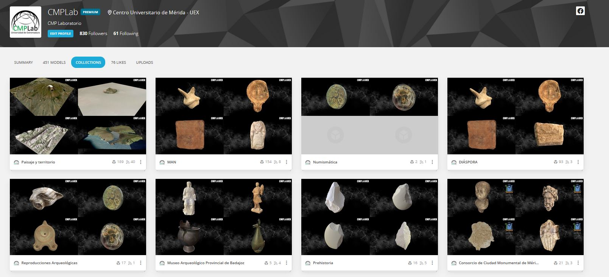
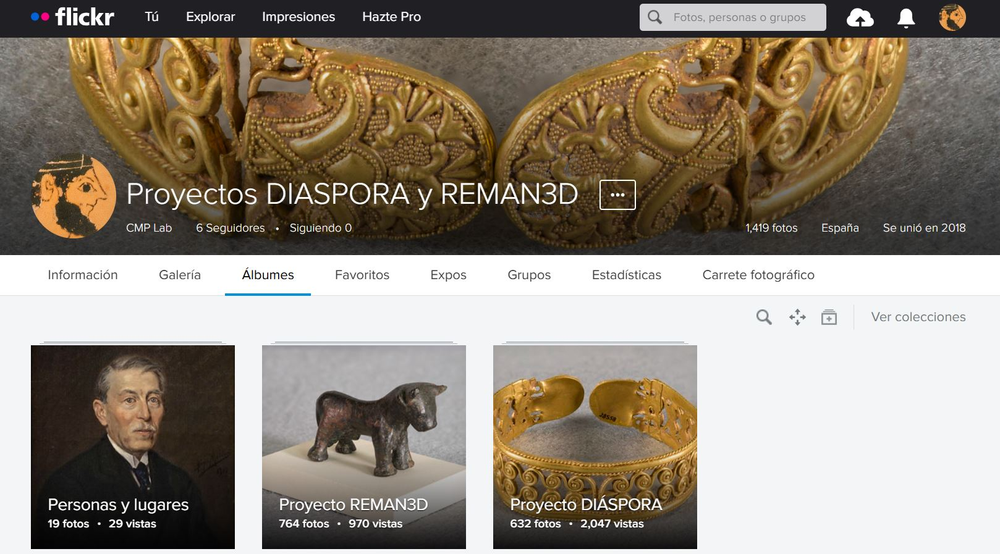

Actividades de difusión
Realizamos actividades de difusión para compartir con la sociedad nuestro trabajo.
- Cuadernos sobre megalitos
El dolmen de Carmonita - 5.2 MB. Modelo 3D interactivo en este enlace.
El tholos de Huerta Montero - 1 MB
El tholos del Cerro de la Barca - 1.2 MB. Modelo 3D interactivo en este enlace.
- El objeto arqueológico virtual sí se toca (2018) Pint of Science. Universidad de Extremadura. Asociación de Divulgación Científica Pint of Science. Mérida, Badajoz, España.
- Sketchfab Blog. Cultural Heritage: The Old Roman City and The New 3D Models: Emerita Augusta and the CMPLab. (2021).
- Cuadernos sobre "Técnicas y métodos de documentación del patrimonio" (2021) Versiones en español e inglés. Repositorio Institucional DEHESA. Universidad de Extremadura.
- Cuadernos sobre "Diáspora. Patrimonio arqueológico extremeño viajero" (2021) Versiones en español e inglés. Repositorio Institucional DEHESA. Universidad de Extremadura.
- Representación virtual de objetos arqueológicos (2023) Participación en la Jornadas “Un mundo de Fusión Digital. IV Edición. Vicerrectorado de Investigación, Transferencia y Divulgación Científica de la UNED.
- Nuestros modelos 3D en Sketchfab

Nuestras fotografías en Flickr:
